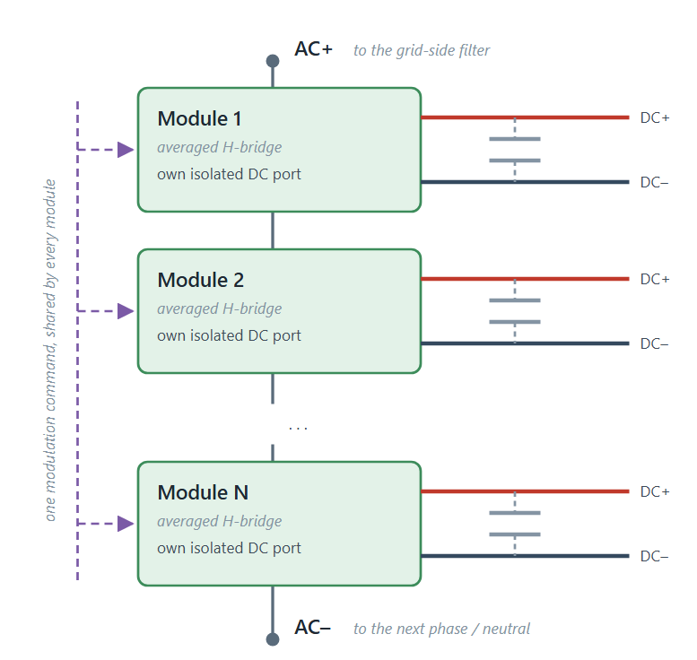

CHB Phase Leg (Average Model)
Contents

One phase leg of a Cascaded H-Bridge (CHB) converter, built from NumModules series-connected average H-bridge cells. Use one instance per phase of a Solid State Transformer.
The component has an input port m, two AC electrical ports AC+ and AC-, and one pair of DC electrical ports DC+ and DC- per module. The DC ports are node arrays: a leg with NumModules set to 3 exposes three independent DC+ / DC- pairs, one per cell, so that each cell can be loaded by its own DC bus capacitor and downstream converter.
The cells are connected in series on the AC side. AC+ is the AC terminal of the first cell and AC- is the AC terminal of the last cell, so the leg voltage is the sum of the individual cell voltages. In the figure the DC link capacitors are drawn in grey on dashed stubs because they are not part of this component: each DC+ / DC- pair must be loaded externally.
Parameters
- Number of H-bridge modules (-), NumModules, specified as a scalar value. Default is 3.
- On-state resistance per module (Ohm), OnResistance, specified as a scalar value. Default is 1e-3.
- Initial DC bus voltage per module (V), InitialDCVoltage, specified as a scalar value. Default is 4400.
- Nominal grid voltage (L-L RMS) for modulation scaling (V), GridVoltage, specified as a scalar value. Default is 13800.
- Total DC voltage per phase leg (V), TotalDCVoltage, specified as a scalar value. Default is 13200.
OnResistance, GridVoltage, and TotalDCVoltage are passed straight through to every cell. Set TotalDCVoltage equal to NumModules * InitialDCVoltage so that the internal modulation scaling matches the actual DC voltage of the leg. See CHB Module (Average Model) for the scaling expression.
Modulation Index Input
The input m is a scalar and is broadcast to all cells: every module in the leg receives the same modulation index. The leg therefore models uniform modulation across the cells, and per-module DC voltage balancing cannot be achieved through this input. Balance the DC buses at the phase level instead, by adding a per-phase offset to the reference upstream of the block.
Initial Conditions
InitialDCVoltage sets the starting value of the internal vDC variable of each cell, but that variable is declared with priority None, so it is not asserted as an initial-condition target. The DC bus voltage at simulation start is determined by the capacitor or source that you connect to each DC+ / DC- pair. Set the precharge voltage there.
Initial-condition targets in the electrical part of this converter chain are load-bearing: if the DC bus capacitor targets are not satisfied, the initial-condition solve falls back to ignoring all variable targets and the phase legs diverge instead of starting from precharge.
Structure
The component instantiates NumModules copies of the CHB Module (Average Model) component with ExternalAccess = observe, connects their AC terminals in series, and routes each cell DC terminal pair to the corresponding element of the DC+ / DC- node arrays. Each cell has its DC- node tied to the electrical domain reference inside the module, so the DC buses of the leg are not floating.